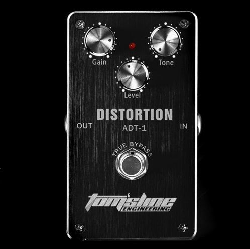
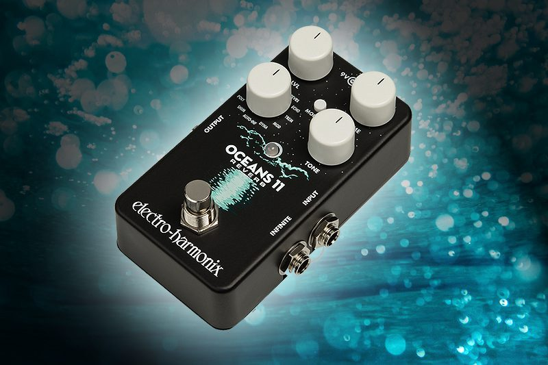
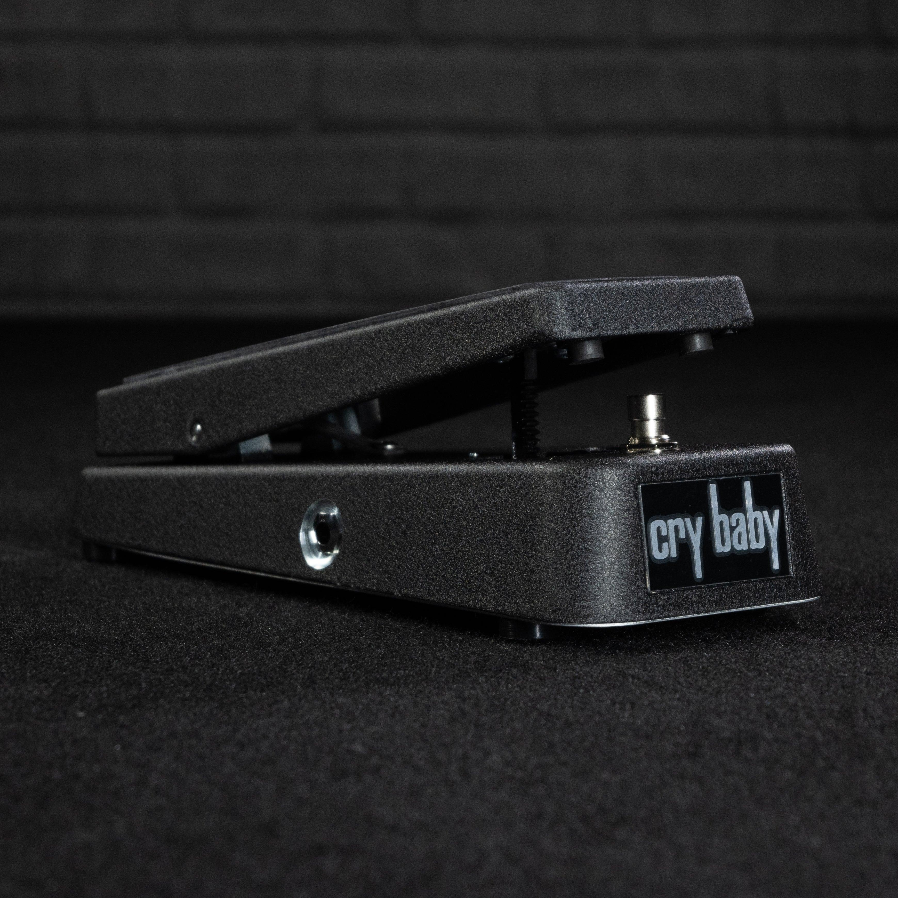

Effetti |
Il tono di una chitarra elettrica può essere alterato tramite l'uso di effetti,
per rendere unico il suono dello strumento.
Tra gli effetti più conosciuti troviamo: |
|
|
La Distorsione |
|
| La distorsione è un effetto che conferisce alle chitarre un tono più duro, aggressivo e ricco di armoniche. Esso modifica il segnale audio in modo che le onde sonore siano "distorte" o saturate. Questo avviene aumentando l'amplitude delle onde, in particolare dei picchi, attraverso l'uso di dispositivi come pedali o amplificatori.
In pratica, quando il segnale supera una certa soglia, viene "tagliato" o "troncato", generando armoniche aggiuntive e introducendo così il caratteristico suono distorto.
È ampiamente utilizzata nei generi rock, metal e punk, ma può essere adattata anche a stili più leggeri, fornendo un tocco di calore e colore al suono. |
 |
Il Riverbero |
|
| Il riverbero simula la riflessione del suono in un ambiente, come una sala o una cattedrale, attraverso la creazione di riverberazioni che prolungano la durata del suono.
È una risorsa essenziale per colorare il suono della chitarra, infatti alcuni amplificatori includono una sezione di riverbero incorporata che può essere attivata per aggiungere questo effetto al suono.
Esso può essere impiegato in modo molto creativo, ad esempio per creare atmosfere specifiche, come un suono da concerto in una grande sala o un ambiente più intimo.
L'effetto riverbero è ampiamente utilizzato in una varietà di generi musicali, dal rock al jazz, dal country alla musica classica. |
 |
L'Effetto Wah-Wah |
|
| L'effetto wah-wah aggiunge una dimesione dinamica ed espressiva al suono della chitarra ed è ottenuto tramite un pedale denominato "pedale wah" che permette al musicista di variare dinamicamente la frequenza di taglio di un filtro, producendo un suono simile al "wah" di una voce umana.
Questo pedale viene azionato col piede dal chitarrista durante la sua performance: premendo il pedale in avanti o all'indietro, si crea un effetto di apertura e chiusura simile a una vocale.
L'effetto wah-wah è spesso impiegato in assoli, fraseggi e parti melodiche per enfatizzare determinate note o creare effetti espressivi.
Esso è ampiamente utilizzato in una varietà di generi musicali, tra cui rock, funk, blues e fusion. È diventato particolarmente iconico grazie all'uso distintivo di chitarristi leggendari come Jimi Hendrix e Eric Clapton. |
 |
| → Torna alla homepage |